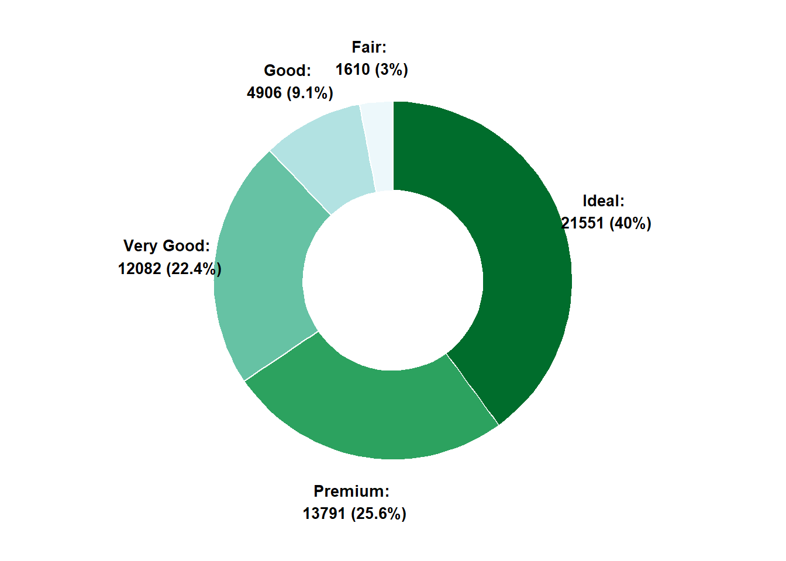

Show/Hide Code
library(tidyverse)与饼图相比，环形图在视觉上更具吸引力，但是也存在饼图的问题,见 Chapter 22
library(tidyverse)Base R先用 pie() 绘制一个饼图，再用Base R::symbols() 叠加略小白色圆形来形成环形效果。
# 定义各部分的比例
Prop <- c(3, 7, 9, 1, 2)
# 绘制饼图
pie(Prop)
# 在饼图中央添加一个白色圆形，形成环形图效果
symbols(
0, # x坐标
0, # y坐标
circles = 0.5, # 圆的半径
inches = FALSE, # 使用坐标单位而非英寸
add = TRUE, # 在已有图形上添加
bg = "white", # 圆的填充色为白色
fg = "black" # 圆的边框色为黑色
)更为复杂的 自定义函数 方法,不推荐
geom_bar()核心思路：
geom_bar() 绘制堆叠条形图coord_polar() 堆叠的矩形切换到环形xlim() 从饼图切换到环形图 (中间添加一个空白圆圈)ggplot(diamonds, aes(x = 2, fill = cut)) +
geom_bar(color = "white") + # 绘制每个cut的条形，白色边框
xlim(0.5, 2.5) + # 设置x轴范围，决定中间空白洞的大小
coord_polar(theta = "y") + # 使用极坐标，将条形图转换为圆环（甜甜圈）
scale_fill_brewer(palette = 2) + # 设置配色方案
theme_void() # 移除所有背景和坐标轴，突出图形主体# 修改label来更改文本
# 修改aes(label = label, x = 3) 的 X 来控制标签位置
# 计算每个cut的数量和比例
diamonds_summary <- diamonds |>
count(cut) |>
mutate(
prop = n / sum(n), # 计算每个cut的比例
percentage = round(prop * 100, 1), # 转换为百分比并保留一位小数
label = paste0(cut, ": \n", n, " (", percentage, "%)") # 组合标签文本
)
# 绘制带标签的环形图
ggplot(diamonds_summary, aes(x = 2, y = n, fill = cut)) +
geom_bar(
stat = "identity", # 使用实际的y值（n）绘制条形
color = "white", # 条形之间的分隔线为白色
width = 1 # 条形宽度
) +
xlim(0.5, 3) + # 控制中间空白圆圈的大小
geom_text(
aes(label = label, x = 3), # 设置标签内容
position = position_stack(vjust = 0.5), # 标签居中显示在每个扇区
color = "black", # 标签颜色
size = 3.5, # 标签字体大小
fontface = "bold" # 标签字体加粗
) +
coord_polar(theta = "y") + # 极坐标转换为环形图
scale_fill_brewer(palette = 2) + # 设置配色方案
theme_void() + # 移除背景和坐标轴
theme(legend.position = "none") # 隐藏图例，标签已包含信息
xlim() 函数可以控制环形的厚度, 通过调整 xlim() 的范围来实现。
看不懂就直接删除coord_polar()，就能看到环形的厚度变化。